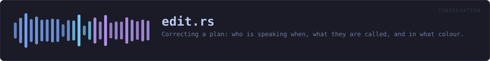

crates/veilvoice-conversation/src/edit.rs
veilvoice-conversation · 657 lines · read the source here · or on GitHub
Correcting a plan: who is speaking when, what they are called, and in what colour.
Why a plan needs correcting at all
A plan says which speaker each span of a recording belongs to, and something had to decide that. Splitting a multi-track recording by channel is exact. Everything else is a guess: a person listening and typing timestamps mis-hears, a plan written from a meeting tool's own speaker labels inherits that tool's mistakes, and two people talking over each other defeat both.
A wrong span is the one mistake in this program that cannot be heard in the result. Both voices are unfamiliar by construction, so a listener has nothing to compare against: thirty seconds of Ada rendered in Grace's voice sounds exactly like Grace talking. Nobody notices, which is why the correction has to happen before the render and why it has to be easy.
What can be corrected
Every operation here works on a plan somebody already has, and none of them touches the audio:
- Reassign a span to a different speaker, by index or by naming a moment inside it. This is the wrong-voice fix.
- Split a span at a moment, for when one span turns out to hold two people, which is what a missed hand-over looks like.
- Merge two neighbouring spans belonging to the same speaker, for when a split was wrong or a detector chopped one sentence into three.
- Move a span's edges, for a hand-over caught a second late.
- Rename a speaker, and give them a colour.
Nothing half-applies
Every operation checks everything before it changes anything, so a refusal leaves the plan exactly as it was. A half-applied edit to a plan is worse than a refused one: it is a plan that looks fine and renders somebody in the wrong voice, which is the failure this whole module exists to prevent.
In plain words
Fixing a plan before you render it.
If a stretch of the recording has been given to the wrong person, this is how you move it. You can also cut one stretch in two where the hand-over was missed, join two back together, nudge where one starts or ends, and change what somebody is called and what colour they are.
This matters more than it sounds. If the wrong person is on a stretch of audio, the finished recording will not sound wrong to anybody, because every voice in it is a voice nobody has heard before. There is nothing to notice. So it has to be right before you render, and that means it has to be easy to correct.
WHAT THIS FILE CONTAINS
657 lines defining 12 functions (11 public), 0 types and 0 constants. Everything below is read out of the source, so it cannot disagree with the code.
What happens when it runs. These are the ways in: public, and nothing else in this file calls them, so they are what an outside caller reaches first.
check_colourline 63 · A colour a speaker can be given, as #rrggbb.Conversation::turns_atline 88 · Every span covering secs, earliest first.Conversation::reassign_atline 120 · Give the span covering secs to a different speaker.
reachesnearest_hint,reassign,turn_atConversation::split_atline 143 · Cut the span covering secs in two at that moment.
reachesnearest_hint,turn_atConversation::mergeline 190 · Join two spans of the same speaker into one.
reachesturn_atConversation::move_edgesline 254 · Move a span's edges, keeping its speaker and its text.Conversation::set_nameline 281 · Rename one speaker.Conversation::set_colourline 309 · Give a speaker a colour, or take it away again.speaker_with_colourline 346 · A speaker with a colour, for building one in a front end.
WHAT CALLS WHAT
The functions this file defines, and the calls between them. An edge means the callee's name appears, called, inside the caller's body. This is a syntactic reading, not a type-resolved one.
The same graph as Mermaid source
%%{init: {"theme":"base","themeVariables":{"background":"#1a1b26","primaryColor":"#1f2335","primaryTextColor":"#c0caf5","primaryBorderColor":"#7aa2f7","secondaryColor":"#16161e","tertiaryColor":"#16161e","lineColor":"#737aa2","textColor":"#c0caf5","mainBkg":"#1f2335","nodeBorder":"#7aa2f7","clusterBkg":"#16161e","clusterBorder":"#2f3549","fontFamily":"ui-monospace, SFMono-Regular, Consolas, monospace","fontSize":"14px"}}}%%
flowchart TD
n_check_colour(["check_colour<br/>line 63"])
n_turn_at["Conversation::turn_at<br/>line 81"]
n_turns_at(["Conversation::turns_at<br/>line 88"])
n_reassign["Conversation::reassign<br/>line 101"]
n_reassign_at(["Conversation::reassign_at<br/>line 120"])
n_split_at(["Conversation::split_at<br/>line 143"])
n_merge(["Conversation::merge<br/>line 190"])
n_move_edges(["Conversation::move_edges<br/>line 254"])
n_set_name(["Conversation::set_name<br/>line 281"])
n_set_colour(["Conversation::set_colour<br/>line 309"])
n_nearest_hint["Conversation::nearest_hint<br/>line 327"]
n_speaker_with_colour(["speaker_with_colour<br/>line 346"])
n_merge --> n_turn_at
n_reassign_at --> n_nearest_hint
n_reassign_at --> n_reassign
n_reassign_at --> n_turn_at
n_split_at --> n_nearest_hint
n_split_at --> n_turn_at
click n_check_colour href "https://github.com/tilas01/veilvoice/blob/main/crates/veilvoice-conversation/src/edit.rs#L63" "open the source"
click n_turn_at href "https://github.com/tilas01/veilvoice/blob/main/crates/veilvoice-conversation/src/edit.rs#L81" "open the source"
click n_turns_at href "https://github.com/tilas01/veilvoice/blob/main/crates/veilvoice-conversation/src/edit.rs#L88" "open the source"
click n_reassign href "https://github.com/tilas01/veilvoice/blob/main/crates/veilvoice-conversation/src/edit.rs#L101" "open the source"
click n_reassign_at href "https://github.com/tilas01/veilvoice/blob/main/crates/veilvoice-conversation/src/edit.rs#L120" "open the source"
click n_split_at href "https://github.com/tilas01/veilvoice/blob/main/crates/veilvoice-conversation/src/edit.rs#L143" "open the source"
click n_merge href "https://github.com/tilas01/veilvoice/blob/main/crates/veilvoice-conversation/src/edit.rs#L190" "open the source"
click n_move_edges href "https://github.com/tilas01/veilvoice/blob/main/crates/veilvoice-conversation/src/edit.rs#L254" "open the source"
click n_set_name href "https://github.com/tilas01/veilvoice/blob/main/crates/veilvoice-conversation/src/edit.rs#L281" "open the source"
click n_set_colour href "https://github.com/tilas01/veilvoice/blob/main/crates/veilvoice-conversation/src/edit.rs#L309" "open the source"
click n_nearest_hint href "https://github.com/tilas01/veilvoice/blob/main/crates/veilvoice-conversation/src/edit.rs#L327" "open the source"
click n_speaker_with_colour href "https://github.com/tilas01/veilvoice/blob/main/crates/veilvoice-conversation/src/edit.rs#L346" "open the source"
classDef entry fill:#1f2335,stroke:#7aa2f7,color:#c0caf5
class n_check_colour,n_turns_at,n_reassign_at,n_split_at,n_merge,n_move_edges,n_set_name,n_set_colour,n_speaker_with_colour entry
classDef api fill:#1f2335,stroke:#7dcfff,color:#c0caf5
class n_turn_at,n_reassign api
classDef helper fill:#1f2335,stroke:#bb9af7,color:#c0caf5
class n_nearest_hint helperThis site loads no third-party script, so it cannot run Mermaid; the diagram above is the same nodes and edges drawn by the generator instead. GitHub renders the source below directly.
ITEMS
| Item | Line | Documentation |
|---|---|---|
check_colour pub fn | 63 | A colour a speaker can be given, as #rrggbb. |
Conversation::turn_at pub fn | 81 | Which span covers secs, if any. |
Conversation::turns_at pub fn | 88 | Every span covering secs, earliest first. |
Conversation::reassign pub fn | 101 | Give a span to a different speaker. |
Conversation::reassign_at pub fn | 120 | Give the span covering secs to a different speaker. |
Conversation::split_at pub fn | 143 | Cut the span covering secs in two at that moment. |
Conversation::merge pub fn | 190 | Join two spans of the same speaker into one. |
Conversation::move_edges pub fn | 254 | Move a span's edges, keeping its speaker and its text. |
Conversation::set_name pub fn | 281 | Rename one speaker. |
Conversation::set_colour pub fn | 309 | Give a speaker a colour, or take it away again. |
Conversation::nearest_hint fn | 327 | Where to look, for a timestamp that landed in no span. |
speaker_with_colour pub fn | 346 | A speaker with a colour, for building one in a front end. |